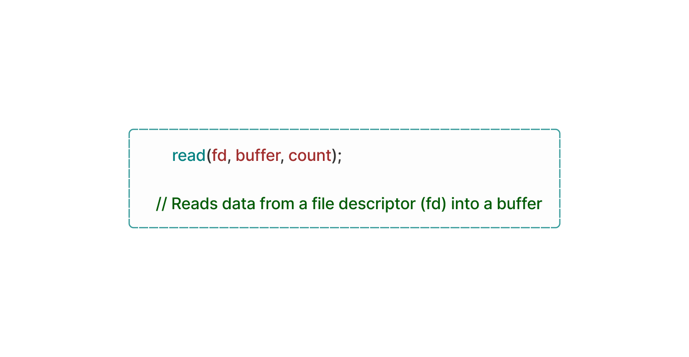
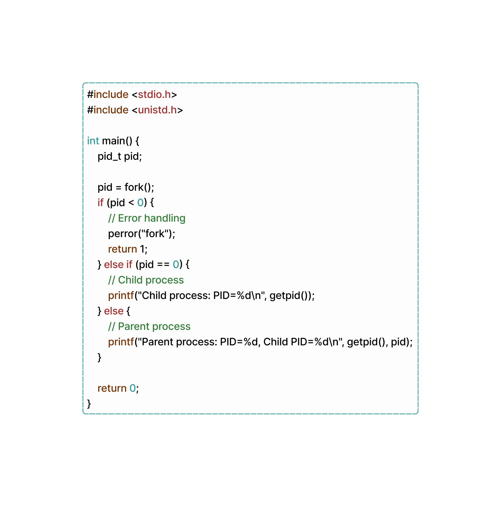
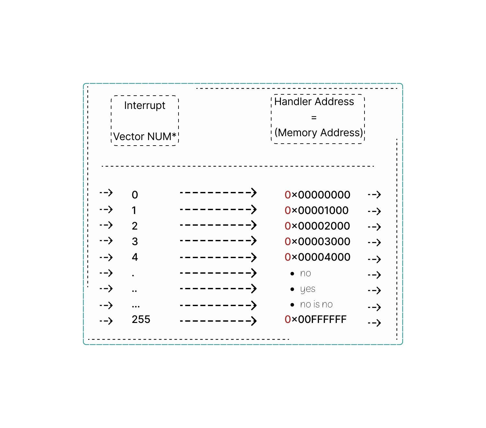
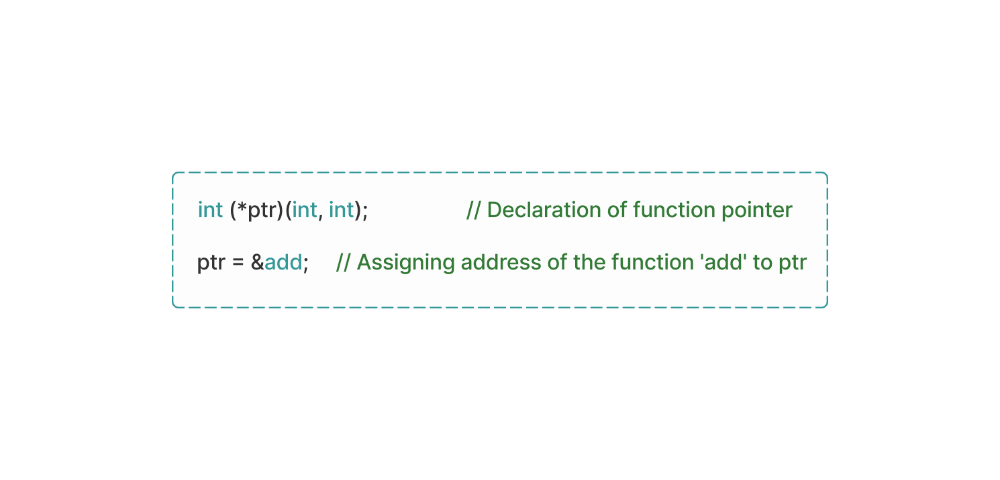
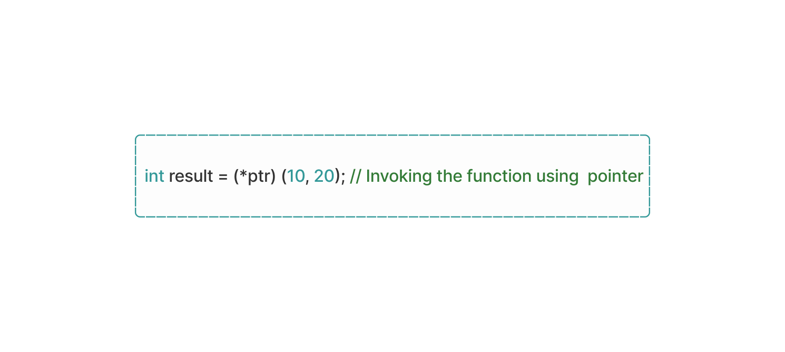
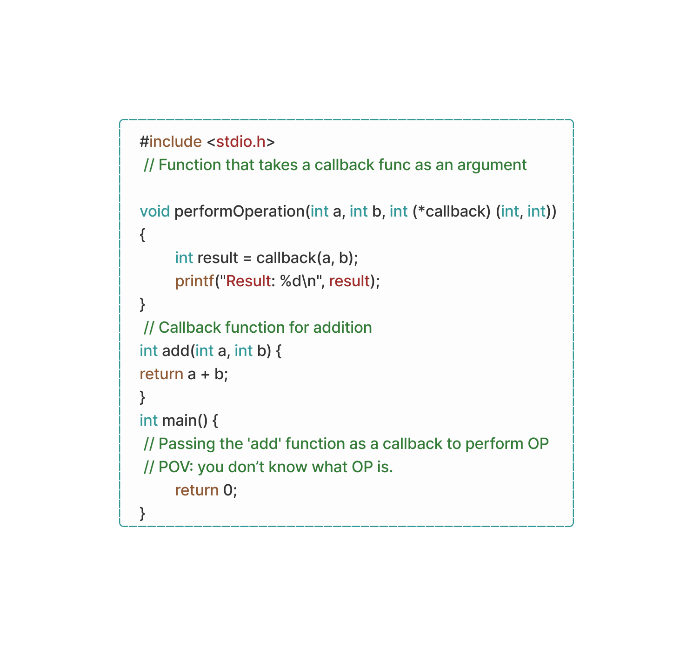
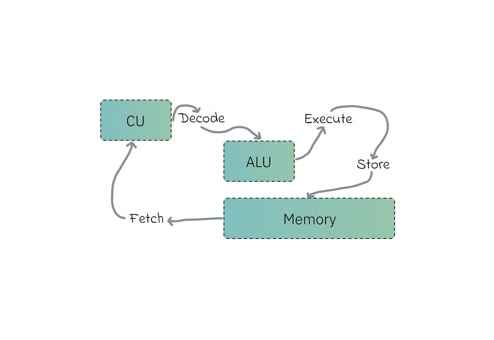

Segment 3
The Memory Pyramid
In modern systems, memory hierarchy refers to the organization of different types of memory based on speed, cost and capacity. This so called Memory Pyramid aims to maximize performance by utilizing various memory technologies for different purposes consisting of many components. We'll take a closer look at each unit in detail as we progress further, basics included:
• Registers: At the top of memory hierarchy are CPU registers, which are small high-speed storage locations directly accessible by the CPU that stores data temporarily during CPU operations (e.g: locating pointers in memory), enabling fast data access and manipulation.
• Cache Memory: Is a small but extremely fast type of memory located between the CPU and RAM, it is also organized into multiple levels like L1 - L2 and sometimes L3 caches with each level offering progressively larger capacity but slower access speeds. You can say RAM plays a role in this but I will not include it.
• Tertiary Storage: Imagine it as an archive storage system used for long-term retention of data that is infrequently accessed like magnetic tape libraries and optical storage systems (idk these myself!) - The point of this is to offer very large capacities at low costs since it's made for the consumer market but has slower access speeds compared to ‘reserve storage’ (read below).
And yes you read that right, i don't make the names.
• Reserve Storage: It's just “using secondary storage like SSDs and HDDs as RAM when the RAM itself runs out of space” but with a different name. If your brain has low memory and forgot the explanation above,reserve storage will act as RAM, in other words when the RAM capacity reaches its limits and can't store more data due to space running out, your SSD will come in handy with a part of it that’s gonna act as the RAM but it’s as slow as your mom (sorry, i really had to pull a ‘your mom’ joke right there!)
• Virtual memory: VRAM? Yes, but not quite. VRAM and VRAM are two distinct entities:
First: Video RAM (discussed earlier), or Video Random Access Memory, is a ‘special’ type of memory used by GPUs. This memory is specifically dedicated to storing pixels and other graphical data. It acts as a framebuffer, holding the information that needs to be displayed on a computer monitor.
Second: Virtual Memory. So, what does it do? Essentially, When you're using your computer the programs and apps you run are managed by something called virtual memory. This means that each program you use is kept separate from the others, and it seems like each one has access to all the memory on your device – But here's the thing:
your device's memory space is actually limited, and it can't hold everything from every program all at once.
So, even though it looks like each program has access to all the memory it wants, only a small part of that memory is actually stored in the physical memory of your device. The rest is stored on your device's disk.
Theoretically speaking, when your device's physical RAM gets full, virtual memory comes into play. It's like a backup plan and reserve storage as VRAM uses a partition of your device's disk space to emulate additional RAM.
In reality, your computer freezes for a couple of seconds and then eventually comes to a halt.
And even if the theory becomes reality: VRAM will introduce a significant performance overhead. Why? Because accessing data from the disk is much slower than accessing it from RAM. So, while virtual memory can give you more memory to work with, it can also slow things down because of the slower speed of storage compared to RAM.
Still, virtual memory is a handy workaround that prevents technical dissasters.
CPU Registers
I know this is related to CPUs but I have to address it here somewhere since it is a part of the memory hierarchy.
So.. these registers are high-speed storage locations directly built into the CPU itself, they hold the stored binary data temporarily during operations to quickly access it as needed while executing instructions, there are several registers available, each with its own set of conventions for use. Some registers are general-purpose, meaning you can store any necessary data in them while your program is running.
- In the end, it's all a bunch of machine code splattered everywhere -
The CPU has many of these specialized registers that we don’t access directly. One of them is the instruction pointer. This register keeps track of the address of the current instruction being executed and automatically updates itself as the CPU progresses through tasks.
When a program is executed, data and instructions are transferred between RAM and CPU registers, first the CPU fetches instructions from RAM into its registers then processes them and may end up storing the results back into RAM. This is known as 'CPU Write Back', sometimes resulting in instructions getting delayed.

To solve the speed gap between registers, Cache-Memory is used as it sits between the both of them, storing copies of frequently accessed data and instructions reducing the need to access data directly from RAM, preserving it for high-priority tasks.
Logically, delaying instructions on purpose seems like a problem in itself. this is why Memory Adress Registers exist.
A ‘special’ CPU register that holds the memory address of the next instruction or data that the CPU wants to access when reading from or writing to memory, loading the wanted memory addresses into the MAR.
The width of the address bus determines the maximum number of memory addresses that can be used by the CPU, for example a 32-Bit address bus can add up to 2^32 (4,294,967,296) memory locations. THATS A LOT OF d̶a̶m̶a̶g̶e LOCATIONS!
Meanwhile 64-Bit systems: Laughing in machine language.
Similar to MAR is MDR (Mem Data Reg). Yet another register within the CPU responsible for temporarily storing data during memory read and write operations. When the CPU executes a read operation from memory, the requested data is transferred from the memory module to the MDR.
Analogously, when the CPU needs to write data to memory, it first places the data into the MDR before initiating the write operation to the appropriate memory location.
The MDR then acts as a temporary buffer for data transferred between the CPU and main memory, allowing data exchange within the system while being organized into a linear address space, where each memory has a unique address, because why not? i mean.. anything memory-space-related has to involve CPU segmentation somewhere.
Memory paging techniques are also used to manage present addresses more efficiently, this is good for PCs with large amounts of memory ->
LTT with a 6TB RAM.
More accurately, 64-bit registers can hold a number up to a massive 18,446,744,073,709,551,615.
Many architectures exist and each one has different ways to perform all kinds of tasks.
Other than that, they store control signals and status flags used by the CPU to manage program execution, handle interrupts and perform error checking while ensuring the relationship between CPU registers and RAM is consistent with the addition of clock synchronization done across the many different registers there is.
Now we can conclude that Registers are useful in the operation of a computer system making the CPU able to interact with its memory to execute programs and process data properly.
| Clarification: What’s a ‘process’? really. What is it in CS?
A process is like a copy of a program that's actively running on your computer.
Let’s say you have a game on your computer, and you decide to play it. Your computer creates a process for that game, if you start a second instance of that game to play at the same time, a separate process will be created for it. So, there can be many processes for the same program running at once.
Inside each process, there's a lot going on. It's not just the program's code; there's also a bunch of stuff that the program needs to keep track of while it's running and we’ll go through many aspects of it down the line. This includes things like current values in a program, any messages or signals the program receives, any files the program has opened to read or write data, any connections the program has made to other computers over the internet, and other resources the program is using, it’s anything you can do, really.
All of this information is stored in the process's memory. And holds other details such as values, code…etc, a process also has some extra information about itself stored by the computer. This extra information helps the operating system manage and keep track of what each process is doing.
Processes
"Processes are the lifeblood of an operating system, and context switching is its heartbeat"
This is basically what you just finished reading above, but explained at length.
So, a program is made up of a few different things. First, there's what's called a binary format. This the code that tells the operating system how to understand the program. It says which parts of the program are meant to be run as instructions, which parts are just information that doesn't change, like numbers or words (referred to as static values in memory), and which other programs, called libraries, need to be included to make everything work.
Then, there are the actual instructions that the program follows… numbers that tells the program where to start following those instructions.
And don't leave out the constants! The constants are just data that does not change regardless of how the program runs. Not even if you happen to fly a 747 into the trade center in MSFS!
There are also libraries that the program needs to use, tools that are borrowed from other programs to assist it in doing its work. The program then has to know where to get the libraries and how to use them.
With all of these things put together we have a program. Each of these parts must work together in order for the program to run properly.
Ever wondered how they start? Or is it just me?
Because when you turn on your computer (assuming you use Linux), magical things happen behind the scenes.
| Author’s Death Note (Definitely not an easter egg):
Did you know that every program on your computer starts from another program, except one?
That's the 'init' process. Unlike other programs, the 'init' process is created directly by the kernel, not by another program. It's the very first program that starts running when your computer starts up, and it's the last one to stop when you shut it down.
Your operating system starts up and creates a process called 'init.d', located in /etc/init.d/– this process a super godsend important doer that does a bunch of tasks to keep your computer running.
It is in charge of handling signals and interrupts. These are little messages that your computer sends and receives to let it know when something important is happening (saved for later).
For example, if you press a key on your keyboard or move your mouse, your computer needs to know about it, and 'init' ensures everything gets handled properly.
But that's not all it does! It also has a special module that helps certain parts of the CPU and its connection with the OS, specifically the kernel. This means that even if your computer shuts down or has a problem, these important parts will still be there when you turn it back on, Kernel is the real savior.
When things get sketchy and you want to run a new program, you actually create a new process for it. And guess what? Another function is used, called 'fork()' to do it. Once the new process is created, Yet another function is used to load the program you want to run into it.
| Clarification: What’s the point of forking functions? 🍴
The 'fork' function is used in 'C' programming to create a new process, known as the child process, which is an exact copy of the calling process, known as the parent process. Here’s a snippet where we create two separate processes with different return values using the 'fork' func:

So, there you have it! When your (Linux) computer starts up, it creates 'init.d' to handle all sorts of tasks, and whenever you want to run a new program, you use 'fork' and some other functions to make it happen. Cool, right?
Fun Fact: You can’t see these things with the naked eye, Thank me later.
Processes are the bond that hold everything together on your devices, but they're a bit like loners too. You see, each process is powerful and can do a lot of cool stuff, but it's also kind of isolated from other processes. What does that mean?
Well, it means that by default, one process can't really communicate with another process. They're all in their own little bubble, doing their own thing without bothering anyone else.
And why is this isolation thing so important? Let’s say you have an Amazon cloud computer, AWS for example. In a big system like that, you've got all kinds of processes running, Some of which might have super high privileges, like monitoring the system or accessing the Kernel in runtime, while others might just be regular everyday processes doing their thing.
Now, if all these processes could just interact with each other whenever they felt like it, your computer can’t stand a chance! You definitely don't want a regular user to accidentally mess with one of those high-privilege processes and bring the whole system down, right? Or worse, what if someone with not-so-good intentions purposely tried to sabotage things by messing with a process?
That's why this isolation thing is needed. Each process has its own virtual space to do its thing, and it can't mess with anyone else's space without proper permission.
Let’s try running the following code:

Chances are, When running the provided code on two separate terminals simultaneously, both instances would print the number 1 instead of 2. Even if we attempted to edit the code in a clever way, such as directly accessing the memory, it would remain impossible to alter the state of another process. And this is process isolation.
This gets us to, how do you differentiate between the child and parent process code when writing it?
When writing code that behaves differently for the parent and child processes in a Unix operating system, you typically utilize the 'fork()' syscall. This call creates a new process, which is an exact copy of the parent process, including its code and data. After the 'fork()' call, the parent and child processes can differentiate between each other based on the return value of `fork()`.
A return value of -1 indicates that something went wrong in creating the child process. In such cases, checking the value stored in 'errno' can help identify the type of error that occurred, with common errors including 'eagain' and 'enomem'. On the other hand, a return value of 0 indicates that the code is running in the child process, while a positive integer indicates the parent process.
The positive value returned by 'fork()' gives us the process ID of the child. Which the child process can use to identify its parent, aka the original process that was duplicated, by calling 'getppid()', eliminating the need for additional return information from forking.
If so, then what traits does the child process receive from the(ir) parent?
Well, when a new process is spawned through forking from an existing one, the child process inherits some characteristics from its parent. These include a mirrored version of the parent's memory structure, covering code, data, heap, and stack segments.
Alongside this, the child process gains access to file descriptors that were opened in the parent process, preserving the environment variables, user and group IDs, and signal handlers.
interestingly, the child process also commences its execution from the same point in the code as its parent, with the transfer of resource limits and potentially scheduling priorities.
Despite these shared traits, each process functions individually, with modifications in one process not impacting the other. Aspects like ‘open file handles, signal handlers, current working directory, and environment variables’ are transferred interchangeably.
If you're interested like i am, processes are made of seperate certain segments like the 'text segment' where all the instructions and code are stored. It's the part that tells the process what to do and how to do it. This is the best part because it's the only chunk of the process that's executable. If you try to change the code while it's running, you'll likely cause a crash (You WILL cause a crash).
Another one is the handler of all the global variables used in the process. 'data segment'. It's the storage area for a process that contains all kinds of variables. There are two types of areas within the data segment: the initialized area, which holds variables with preset values, and the uninitialized area, which holds variables that haven't been given a value yet. This segment is writable but not executable. Also, it's different from other segments in size, since it's determined by vaules present in the src code and can't be changed during runtime.
Every time a new variable is declared or a function is called, the 'stack' grows to make room for it where the process keeps track of things like function calls and local variables. If the stack grows too big, it can cause a stack overflow (error, not the website), which usually results in a crash. unlike the 'text segment', the stack is writable but not executable.
Sometimes there's room for a room to room if needed, This is 'heap'. An extra storage space that the process/stack can use if it needs more memory. It's where things like dynamically allocated memory go. The 'heap' can grow as needed, but if the system is limited or if you run out of available memory addresses, you can run into problems. the 'heap' is writable but not executable.
So, if this long topic teached me anything. It would be that: A process consists of various parts that enable it to function properly. Firstly, the 'text segment' stores the program's instructions and code, allowing the execution of tasks. the 'data segment' then holds global variables, both initialized and uninitialized, providing data storage. The 'stack' manages function calls and local variables dynamically, while the 'heap' allocates dynamic memory spaces, accommodating additional space when needed.
Interrupta-pedia.
While we’re still in the context of processes, How do processes switch contexts without getting interrupted by other processes?
They do exactly what I did here. They do so using interrupt descriptor table. More specifically 'IDT' is just the implementation name for the x86_64 architecture; otherwise it’s referred to as interrupt vector table.
An 'IVT' is like a big list that matches up different types of interrupt requests with specific actions called 'interrupt handlers'. These interrupt requests are like little flags that tell the computer, "Hey, I started doing X, pay attention!!" Each item in this list is called an 'interrupt vector', and it holds the memory address where the computer should go to find the right interrupt handler for that specific type of interrupt. These handlers are also known as interrupt service routines.
Although the idea of an 'IVT' is pretty common among different types of chips (or, architectures), the way they're set up can vary depending on the specific architecture. For example, there's something called a 'dispatch table', which is one way to organize and set up an 'IVT'. It's kind of like having a directory that helps the computer quickly find the right handler when an interrupt comes knocking.
OS developers have three methods to pinpoint the starting address of the interrupt, each one relying on the presence of an 'IVT'.
First, is the 'predefined' method where the Program Counter directly loads with the address of an entry within the 'IVT'. The table itself protects executable code. And each entry comprises a solitary jump instruction directing to the complete 'interrupt service routine' corresponding to that particular interrupt. Mostly embraced by platforms like the 'Intel® 8080', and other microship first gen microcontrollers such as 'Atmel AVR'.
Secondly, the 'fetch' method does an indirect loading of the 'Program Counter'. Here, the address of an entry within the 'IVT' is utilized to extract an address from said table loading the 'Program Counter' with the derived address. Each entry of the latter corresponds to the address of an 'ISR'; this single handedly loads the 'Program Counter', without it - it might be impossible to do the 'interrupt aknowledge' method.
Operated by the external device furnishing the CPU with an interrupt handler number. So, when an interrupt event occurs, the CPU attempts to locate the corresponding interrupt handler within the 'IVT', thereafter handing over the control to the kernel.
For example:

The column 'interrupt vector number' specifies the number assigned to each interrupt vector.
The column labeled "Handler Address" shows the exact memory location where the associated interrupt handler routine resides. It's like a map telling the CPU where to find the right instructions to deal with specific interruptions. The IVT comprehensively covers interrupt vectors ranging from 0 to 255, allowing for a range of interrupt types to be handled. But, the actual number of entries and vector numbers can vary, as it depends on the specific architecture.
Unexpected tidbit: If you abbreviate the term 'interrupt descriptor table'. Then reverse it - You get 'TDI', which stands for Turbo Charged Diesel Injection, an engine developed by Volkswagen fo- Okay. Ethically, believe it or not but computers emit more CO2 than cars.
Why 'IVTs'? Because operating systems are as simple as just a bridge between the hardware interrupts and programs. To make handling interrupts simpler, custom libraries are/can be used.
On Unix systems, there's one called libc. Not sure about this but i think Windows has its own built-in DLL. These libraries wrap the low-level instructions needed to manage interrupts into simple functions that any program can use.
So, when a program calls one of these functions, it's like making a regular phone call – nothing fancy.
But behind the scenes, in these libraries, there's some tricky assembly code doing the work. This code is super specific to the type of architecture your computer is running. It's like having a Chinese translator whom you don’t even understand – it makes sure programs can talk to computer hardware without any problems.
And that's why Various assembly languages exist, each tailored to the specific processor you intend to communicate with.
Memory Pointers
| Clarification: What is kernel btw?
Your computer's main programs, such as Windows, or Linux, help it do basic tasks. The main part of these programs is called the kernel. When you turn on your computer, it starts with the kernel. it has control over everything in your computer, including memory. It also manages the other programs you use. We'll talk more about how the kernel does this later!
Linux is a special program that's just a kernel. It needs extra programs like shells and display UIs to be more accessible. For macOS, its kernel is called XNU, and it's a bit like Unix. Since Windows uses the NT Kernel to run. Each of these kernels has a different way of managing your computer and for windows, it's used to ensure you have input problems.
So, whether you're using a Mac, an emulator, or a Linux machine, it's the kernel that keeps things ticking along nicely.
A pointer… in computing, is a programming language object that stores the memory address of another value located in computer memory and it’s essentially a reference to a(nother) memory location.
Pointers are mostly used in programming languages like C, C++ and others to manage memory content dynamically.
Okay… it’s dynamic, but how can a memory stored in a specific location inside RAM be dynamic? I don't get it either!
If you’ve done some low-level programming before then you know that pointers in general allow programmers to allocate memory dynamically at runtime using functions like 'malloc()' in C, because it's good, and prevents memory waste for the most part. more on 'malloc' and 'free'' on the way
Let's start with the definition and Syntax of Function Pointers a bit more in-depth.
First, It is a variable that stores the address of a function in memory, while the Syntax for declaring a function pointer involves specifying the return type and parameter types of the function it points to, in particular: it uses `return_type (*pointer_name) (*parameter_types);` because these pointers are created by assigning the address of a function to a pointer variable.

For these functions to be used, you have two main options: you either use a dereferencing operator ('*') or the function call operator'()'. It's just like in Syntax programming, where you have different ways to call functions.
When you call a dereferencing operator, you're specifically prompting the computer to treat the function that is pinged by the operator as a regular function. On the other hand, when you use function call operator, you're directly invoking the wanted function just like you would with any regular function in Syntax programming. Function operators are the Swiss Army knife of programming languages.

Did you know: that function callbacks exist?. They do, but in the form of arguments to other functions allowing the called function to execute the passed function at a later time, take a look at a Callback Function being used in C:

In Object Oriented programming, Func pointers are used for dynamic dispatch as they can enable polymorphic behavior allowing the correct function to be invoked based on the type of object in runtime. It’s mostly used for creating virtual functions. (e.g in C++ virtual functions are declared using the 'virtual'' keyword) – for Java it goes with the annotation '@override', but who cares about Java anyway?
Wrap-up: So now you know when a program executes, memory pointers are used to access data stored in RAM as the CPU fetches it from back its registers using memory pointers. This data is then operated upon by the CPU’s arithmetic logic unit-s (ALU) after doing its never-ending Fetch-Execute cycle, the CPU keeps executing instruction after another while the pointer keeps moving forward pointing to the next instruction.

One Fusion Away From Shrinking
Ever heard of the word ‘superscalar’? It’s not just a fancy word; it carries decades of architectural advancements within it which gets me to the question, How are instructions formed?
First we have instruction fusion that somewhat does its fair share in constructing instructions by consolidating multiple independent instructions from a program into a single micro operation (micro-op) that can be executed. consolidating=fusing.
It is a clever strategy employed by certain CPUs to overcome performance overheads. It does so by combining several separate instructions from a program into a single or micro-op, which the CPU can execute in one operation.
You should know that instruction fusion is distinct from cases where a single complex instruction, like 'cpuid' or 'lock add' , because registers like 'EAX' split into multiple micro-operations . In most cases, instructions decode into a single micro-op , which is the norm for modern x86 CPUs.
Speaking of x86, the CPU's backend must carefully manage all micro-operations associated with each instruction, regardless of whether fusion occurred. Once all the micro-operations linked to a particular instruction have completed execution and retired from the re-order buffer, (ROB).
Any instruction that goes through that is considered retired. It's worth mentioning that interrupts can only occur at instruction boundaries, so retirement must align with these boundaries to ensure proper handling of pending interrupts. This means that retired slots can be filled without regard to instruction boundaries, except when handling interrupts.
As you know, the CPU takes care of managing instruction fusion, but the operating system also makes the most out of this trick.
In the (Linux) kernel , there are smart changes made to find and use instruction fusion opportunities. These changes are deep into the code, checking sets of instructions to see if they can be put together. By finding separate instructions and putting them together into a single action. One big plus of using instruction fusion in (Linux) kernel is that it cuts down on pauses in the CPU pipeline. When several instructions are combined into one action, the CPU's pointer doesn't have to stop as often, And about how instructions are handled by the CPU's parts. Each instruction might be made up of smaller bits called micro-ops, depending on how complicated it is.
The program counter keeps track of all these little parts for each instruction, whether they're combined or not. When all the micro-ops or for one instruction are done, it's considered finished, or 'retired' ; And this is important because the CPU can't stop in the middle of a task to handle something like an interrupt.
When everything is going the way it's supposed to, the backend(x?) can add new instructions without having to stop in the middle of something else.
So, how does the kernel benifit from fusion?, By putting several micro-instructions together into one big-instruction, the CPU can get more tasks done in a shorter amount of time. And the instruction pipeline works better overall while also preventing pipeline stalls.
In other words: the CPU is speedrunning instructions.
How CPUs Make Smart Guesses
Yes, CPUs really make guesses based on many attributes using a branch predictor, which is a digital circuit CPUs use to speed things up a bit. Technically speaking; it’s an internal predictor that anticipates the probable direction of a program's execution flow before it reaches a decision height, and tries to preemptively determine the outcome of conditional statements, such as 'if/else' constructs.
Why is this guesswork important? CPUs work in an assembly line fashion, fetching and processing instructions one after another endlessly. But when a program encounters a branch/decision point, the CPU has to wait to figure out which instruction to fetch next. This waiting slows things down by sooo much and it’s just… inconvenient (i really wanted to use that word).
Here's where the branch predictor is useful (as in most cases). It analyzes past branching patterns and uses that information to guess which path (taken or not taken) is more likely. If the guess is correct, the CPU can keep the instruction pipeline flowing allowing programs to be executed. But what happens when it takes a wrong turn? Oops! When the branch predictor makes a bad guess, the CPU pipeline comes to a halt, breaking all of the computer components. Come on, did you really believe that?
A wrong branch prediction comes with a performance penalty. Resulting in the CPU having to spend extra cycles clearing out the pipeline and fetching the correct instructions. This is especially noticeable for complex branches or loops that are predicted incorrectly - looking at you Python!
The way it realy works internally is by involving the CPU and attempting to foresee the direction of program execution before reaching a branch instruction. When encountering a it, the CPU faces unpredictability regarding which instruction to fetch next, again - resulting in a pipeline stall.
Branch prediction techniques can be categorized into static and dynamic approaches. Static prediction relies on simple strategies, such as always assuming a branch will be taken or not taken, rather lacking in accuracy. On the other hand, dynamic prediction employs more methods that learn from past branch behavior. Common dynamic prediction techniques are the use of a Branch History Table to track recent branch history and a 2-bit saturating counter to assess branch outcomes. In terms of OS, Linux conditional branches are encountered in code execution, doing similar challenges to the CPU. - Linux is great at managing branch prediction scenarios -
- A topic can’t be technical without including kernel in it - And that’s why Kernel-level branching comes alive. The (Linux) kernel often shows specific branching patterns in its codebase that you can find, reflecting the logic of many many different kernel subsystems and functionalities, for example; in the kernel code, we use 'if/else' statements and loops a lot to make predictions based on different situations. These early predictions allow the kernel to figure out what to do next, like responding to interrupts. If a program requests the kernel to do something, it does so by running the right code for that request (obviously). It has different ways to deal with these devices, like getting them ready to use, moving data to and from them, or handling any problems that come up. It does this by using things called ‘locks’ to control access to memory or files. If something goes wrong while the system is running, the kernel finds out and tries to fix it. You just read what the kernel does again for the 99th time, this will be the last time - i promise.
What about User-level branching? if you have a functional CPU, then it performs branch prediction when conditional branches are present in User-level apps. This involves predicting outcomes of branches based on past behavior and patterns - whether likely to be taken or not taken. Prefetching instructions lets the CPU to execute them ahead of time upon such predictions, reducing pipeline stalls impact and beating the unbeatable instruction fetch world record.
For instance, branch prediction in user-space helps the CPU anticipate loop conditions when a large dataset is iterated over and over by user-level apps. It can also prefetch instructions before iteration begins which again, prevents possible pipeline stalls - Operating systems are weird.
I have the thought “branch prediction is a performance overhead in itself, and it’s used to guess upcoming instructions upon pre-fetching trying to cover the prefetch delay caused by predicting. Then what’s the point?”
One equivalent thing to say: ‘Is it truly healing if you must first harm yourself?’.
Empty space for no reason, literally